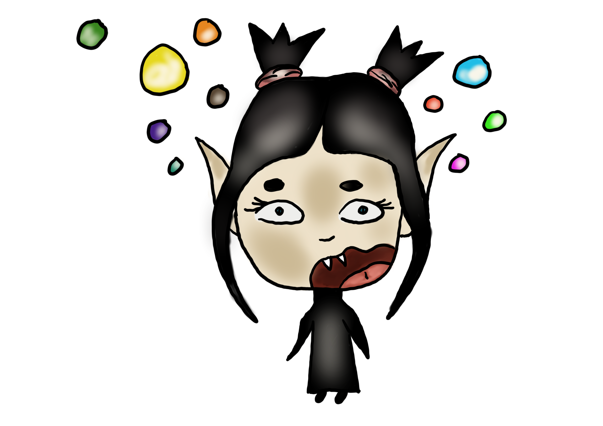

Trixie & Truls
Trixie is a 16-ish something girl who lives in her uncles old manor with her best (though very grumpy!) friend; a black, talking cat named Truls. One day a strange little girl was falling down from the sky and nobody seem to know where she's come from. Now they all have to cope with this mess (she's literally a jumping tornado) and uncover her past.
We're also introduced to Trixie and Truls other friends who seem to appear out of nowhere when it doesn't even suit the situation.
About Trixie
I focus on the main character for this project (even though Truls would argue that he is the main character but yeah, don't care about what he says hihi) which is Trixie. Trixie is a overly animated version of myself, as you probably can guess... I mean my internet name is Trix Joyce and her name is Trixie... Anyway, here is a little profile of Trixie from "Trixie and Truls" so you can get to know her...Character profile
|  | BioTrixie is a 16-ish something years old girl who lives alone. She once had an uncle but he died and he left his manor to his only ancestor, which was Trixie of course. Name: Trixie StawartzGender Female Age: 16 Orientation: Queer Favorite food: Pasta Hobbies: Horror movies, reading, cooking food, find creative ways to live life. |